Geoportfolio
Julian Minato
About
This website is the geoportfolio of Julian Minato. The website contains
information that is academically and professionally related to the field of geospatial science
I am an aspiring geospatial scientist currently in my third-year of studying a Bachelor of Geospatial Science (Honours) degree at RMIT University.
My geospatial-related interests are anything Cartography related - I love the map making process and being able to visualise information in a manner that anyone can interpret.
My most recent geospatial project covered a Spatial Distribution, Clustering and Population Analysis of Melbourne’s Metropolitan Train Network. Some outputs from this project can be seen in this portfolio.
Academic Portfolio Overview
Cartography
Cartography consists of creating maps using spatial data obtained from sources such as publicly online government data and population numbers from the Australian
Bureau of Statistics (ABS). While there were two tests and a first practical (not included as it was more of a report rather than a map), the significant
practicals completed in Cartography 2 involved the production of three maps of the student's choice based on a specific topic:
- Practical 2: Map directed at a target audience of choice using provided data of Melbourne City
- Practical 3: Thematic mapping of a demographic's population using data from the Australian Bureau of Statistics (ABS)
- Final Cartography Map: Free-choice on topic
Below are the three maps that I have created as part of my course:
Note: If map display is too small, right-click the image and 'Open in new tab' to allow zooming of the map.
Melbourne Map: 11 of Melbourne's Best Laneways and Attractions
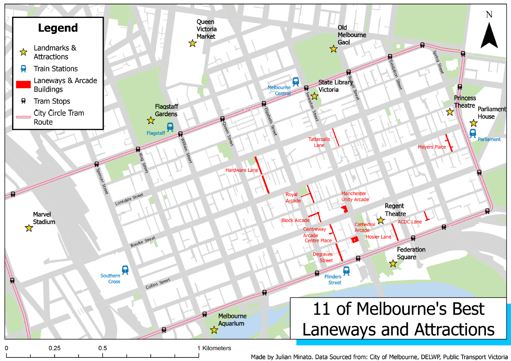
Thematic Map: Italian Ancestry in Melbourne
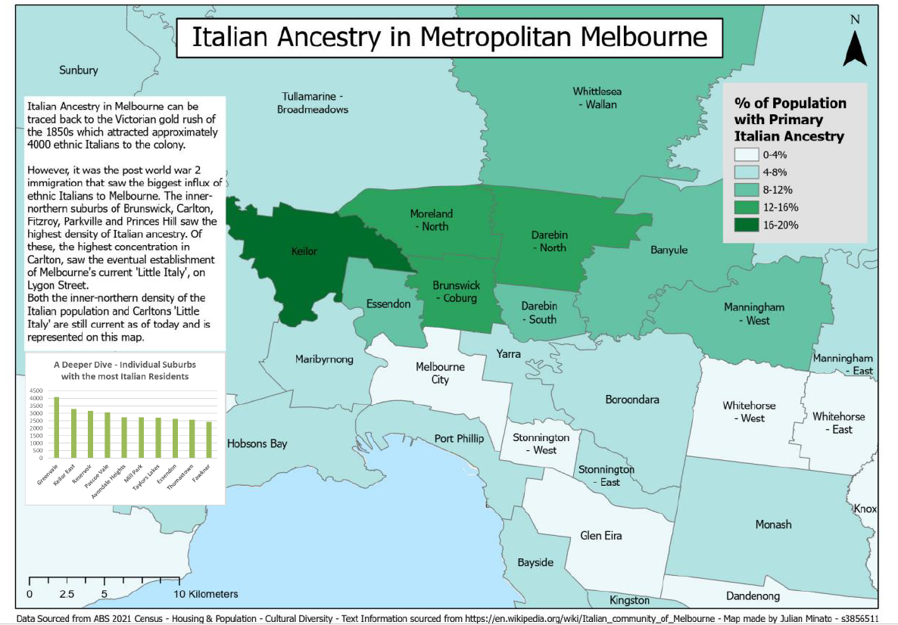
Story Map: Cashing in on Exhaustion: The Fatigue Factor in Football's Corporate Grind
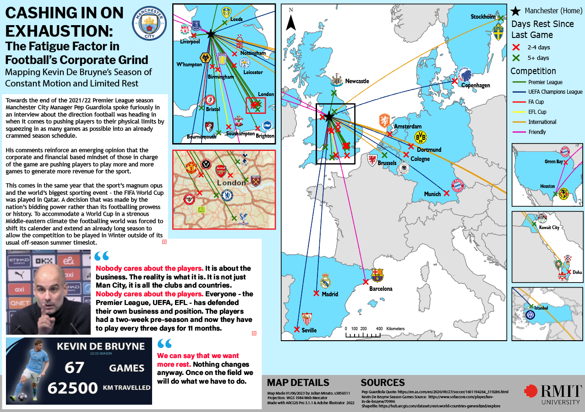
Spatial Information System Analytics (SIS)
Spatial Information System Analytics is the third and final SIS subject in the degree. It focuses on quantitative methods of spatial pattern analytics applicable to different types of geographical data
and emphasises spatial, statistical, and numerical techniques for describing, analysing, and comparing spatial patterns so that spatial relationships among relevant geographical phenomena can be characterised, modelled, predicted, or optimised.
The topics in the subject included statistical measures and GIS-based methods for the following:
- Spatial Interpolation
- Spatial Pattern Analysis
- Regression Analysis
For the 2024 version of the course which I completed, the final assignment was to answer a practical geographical question as a geospatial analyst.
It involved gathering data, devising an analytical process, and producing results in order to answer the question.
My aim was to investigate the spatial distribution of stations and analyse ridership patterns of Melbourne's metropolitan
train network to help make formulated decisions.
As part of the project I produced the following maps:
- Melbourne's Metropolitan Train Network Map (manually compiled from raw station spatial data)
- Near Analysis of Melbourne's Road Network to the nearest Metropolitan Train Station
- A heat map of patronage on the network
- A population density map of Urban Melbourne
All maps were created using raw spatial data collected from DataVic and Public Transport Victoria.
All maps were constructed and outputted with ArcGIS Pro.
Note: If map display is too small, right-click the image and 'Open in new tab' to allow zooming of the map.
Melbourne's Metropolitan Train Network Map

Near Analysis and Patronage Heat Map
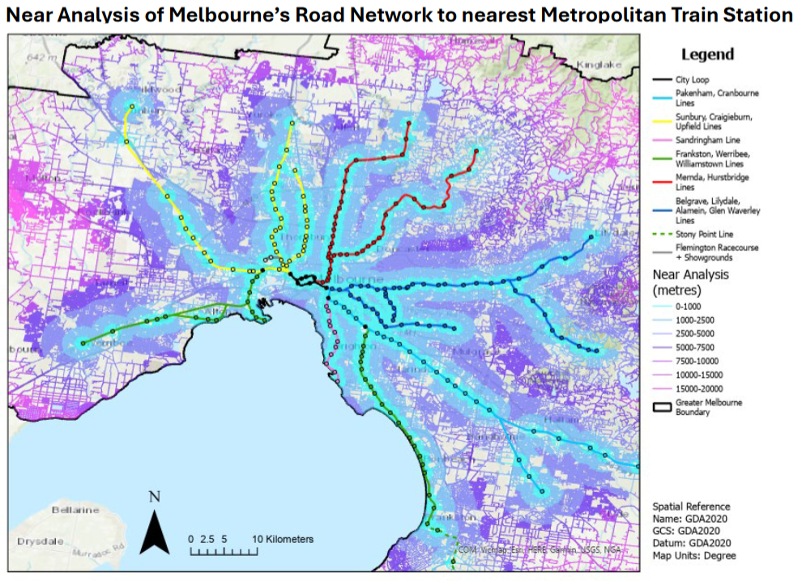
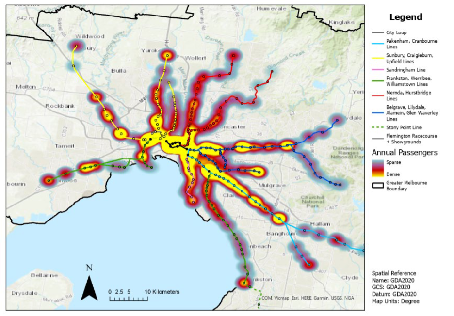
Population Density Map
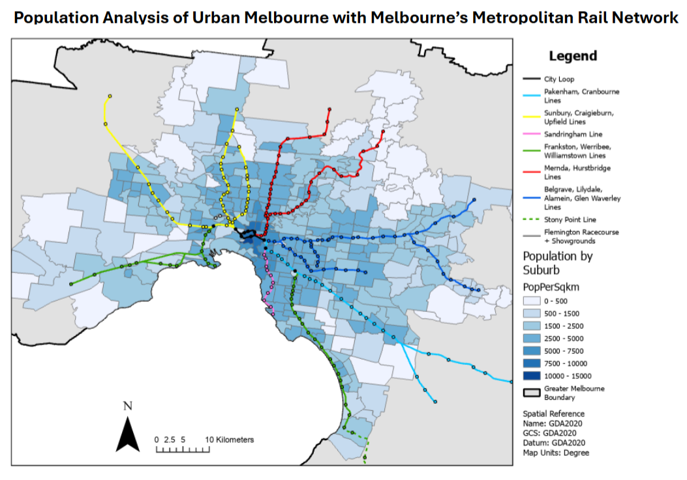
Other Maps I have created
There are a variety of other maps I have created during my studies that were not a part of the projects mentioned above. They are listed as follows and shown below:
- Tan Trail Route Correction Proposal
- Digital Elevation Model of the Gardiner Catchment
- Global Distribution of Terrestrial Biomes
- Melbourne Park Visitors Guide
- Habitat Loss in Australia
- Landslide Severity Map Victoria
- Landuse in Victoria 1901-2005
Note: If map display is too small, right-click the image and 'Open in new tab' to allow zooming of the map.
Other Maps
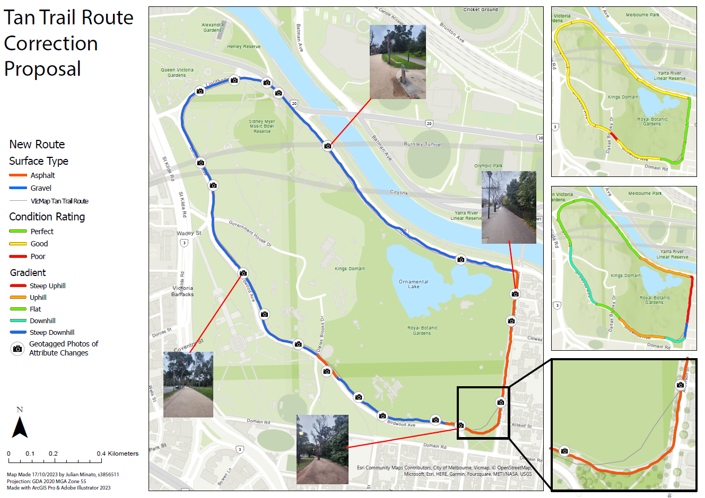
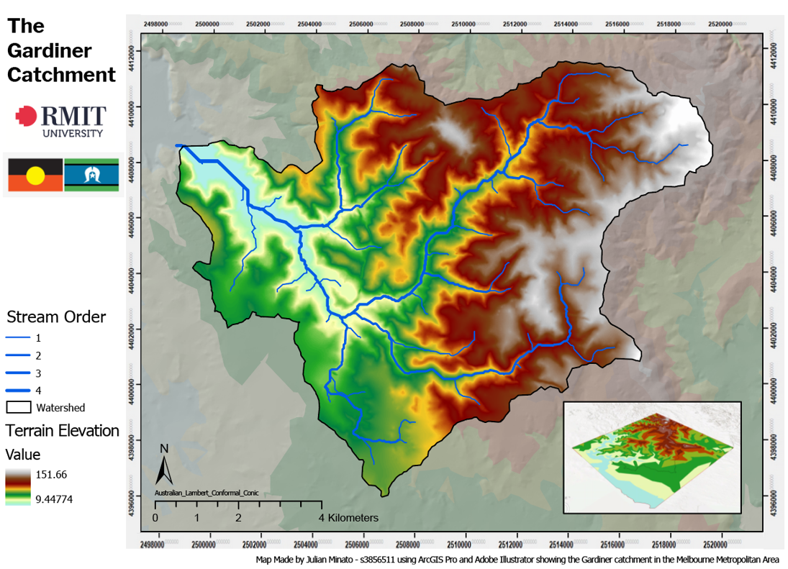
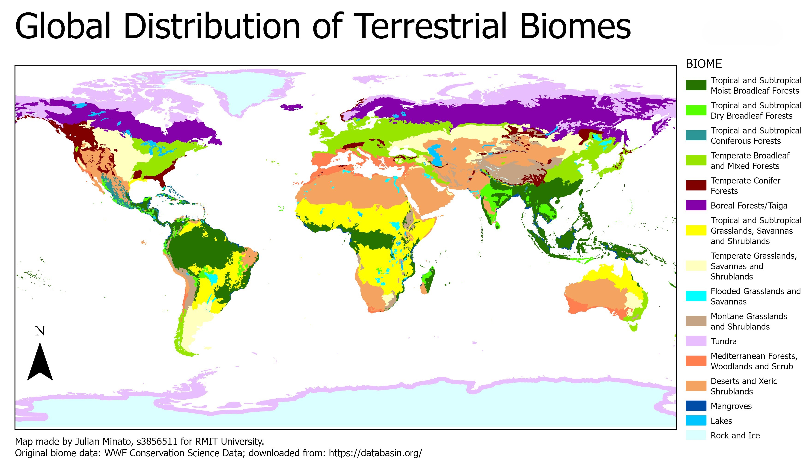
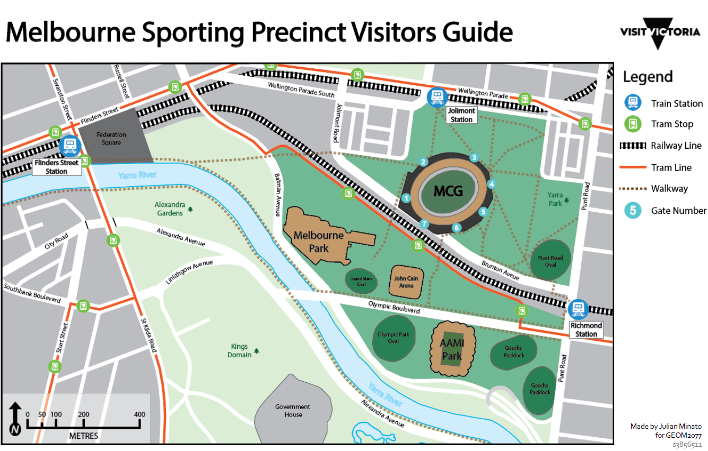
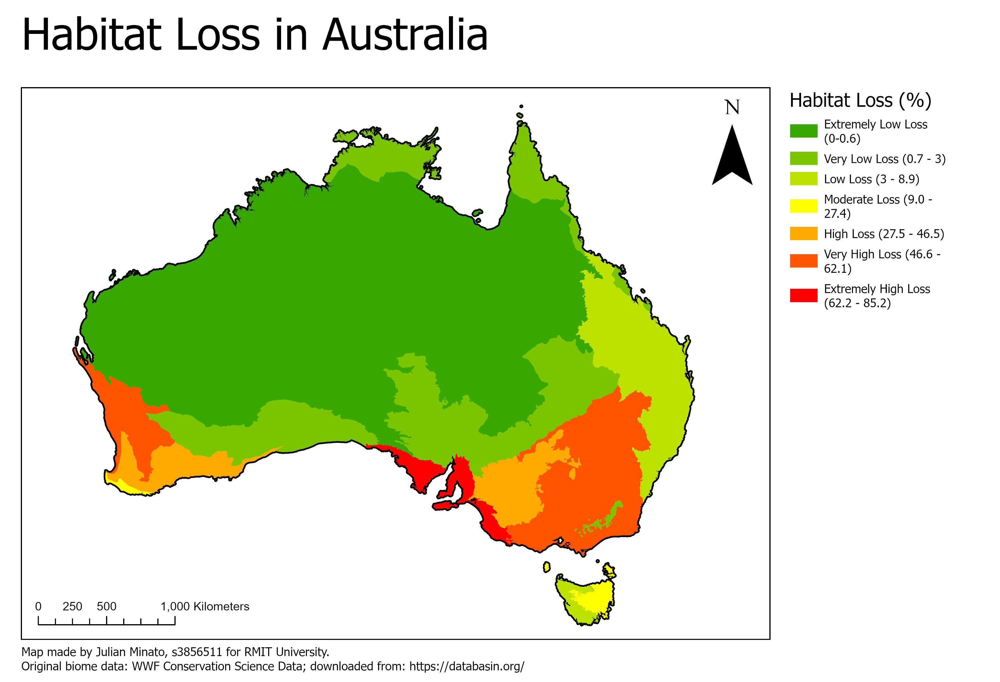
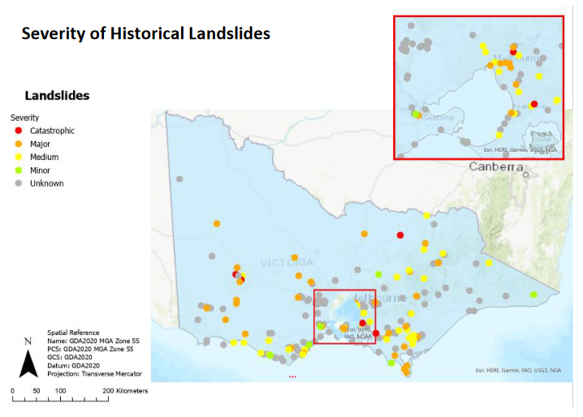
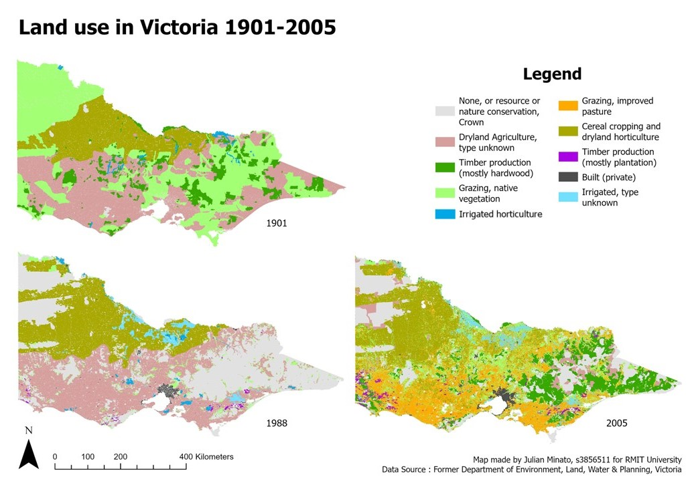
Skills and Proficiencies
 |
GIS |
|
ArcGIS |
 |
Cartographic Principles |
 |
Adobe Illustrator |
|
Mathematics |
|
Problem Solving |
|
Web Design: HTML & CSS |
 |
Web GIS |
Credits and Attributions
The following programming languages and software were used to create the website
- HTML
- CSS
- JavaScript
- Visual Studio Basic
The deliverables contains content from the following subjects:
- Cartography 2 (GEOM2079)
- Spatial Information System Analytics (GEOM1057)
Special thanks to the following people who have helped me make this website with their expertise and guidance:
As per the policy of using the Flaticons with a free account, the attributions and crediting of the creators of the icons are as below:
Attributions of icons used: